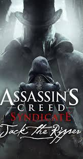
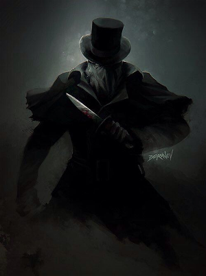

Jack Spintecătorul
Jack (1860 - 1888), cunoscut anterior sub numele de Jack the Lad în tinerețe, și temut pe scară largă sub aliasul „Jack the Ripper”, a fost membru al Frăției britanice a asasinilor, activ în districtul Whitechapel din Londra.
În jurul anului 1873, el a călătorit cu Jacob și cu ceilalți inițiați în India pentru a învăța tactica Frăției Indiene, grup căruia s-a alăturat sora lui Jacob, Evie Frye, după căsătoria ei cu Henry Green și mutarea ulterioară. La întoarcerea la Londra, Jack a început să dezvolte o viziune extremistă asupra misiunii asasinilor, crezând că asasinii trebuie să fie temuți de cetățeni, ucigând inocenți, dacă este necesar.
În 1888, Jack a devenit infam pentru o serie de crime groaznice de femei prin Whitechapel; în realitate, aceste femei erau colegi asasini deghizați în prostituate care încercaseră să-i oprească activitățile. Aceste crime, au amenințat reputația discretă și chiar existența asasinilor din Londra.

Jack a organizat o "reuniune" între gemenii Frye la Lambeth Asylum, cu intenția fie de a o recruta pe Evie, fie de a o ucide. El a adus-o pe Evie la locul crimei mamei sale, a aruncat o bombă în direcția ei și a lăsat-o cu indicii care să arate adevărul. Ca pregătire pentru sosirea ei, el a ucis personalul azilului care știa despre timpul petrecut de el acolo în copilărie, inclusiv asistenta sa abuzivă, un medic și directorul azilului și a distrus toate înregistrările șederii sale. În plus, pentru a o încetini pe Evie, Jack a eliberat toți deținuții azilului. În timp ce deținea un avantaj față de Evie cu puterea și ajutorul superior al deținuților, Evie a reușit să-l prindă pe Jack și l-a rănit fatal cu propriul pumnal. Jack i-a spus lui Evie că nu era diferită de el înainte de a ceda, punând capăt terorii și domniei sale.